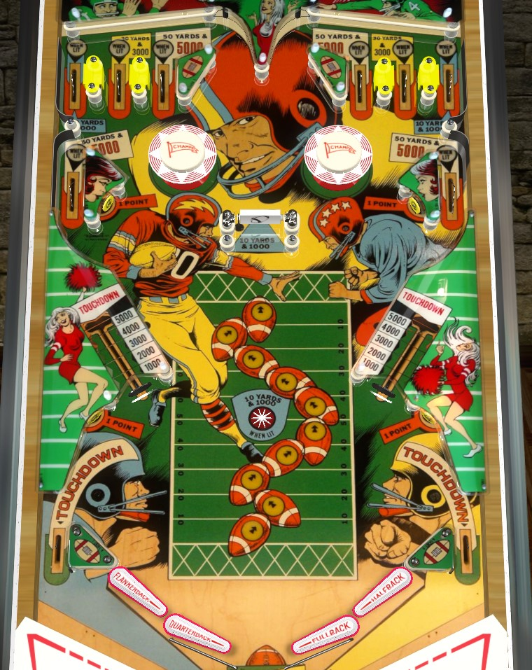

Pro Football is a 1-player version with slightly less inflated scoring. Gridiron is the 2-player version.
The default feature to focus on is the spinner. On Pro Football, the spinner is worth 100 points per spin; you may choose to opt for vary-target shots instead if the spinner doesn't spin very well. On Gridiron, the spinner is worth 1,000 points per spin, you should always go for the spinner no matter what state it's in. In either case, it's usually slightly better to shoot the spinner from the inner flippers to make it more likely that the ball ends up in the top lanes. Touchdowns scored by collecting 100 yards or draining through an out lane score 6,000 points.
Pro Football/Gridiron does not have a conventional plunger, Instead, pressing the right flipper button will start your turn by launching the ball upwards from the drain and between the flippers. There is no "skill shot" available.
The goal of Pro Football/Gridiron is to collect football yards. The safest way to do this is to shoot the spinner; each spin gives 10 yards and 100 points. A shot through the spinner, especially from the inner flippers, can follow a curved path to one of two sets of three top lanes, which are mirrored from each other; the centermost lane scores 50 yards and 500 points, the next lanes outward score 30 yards and 300 points, and the outermost lanes score 10 yards and 100 points. Additional side lanes below the sets of three score 50 yards and 500 points. All scoring mentioned in this paragraph is Pro Football values only; on Gridiron, all pinball scores mentioned in this paragraph are multiplied by 10.
Scoring a touchdown scores 6,000 pinball points and 6 football score. Various standup targets around the playfield are worth 1 football score. Football score serves only as an additional way to earn skill-based replays, or an alternate way to play the game casually; in a tournament setting, the winner is usually determined as the player with the most pinball points.
The vary-targets register 6 different levels of hit, which score 1,000, 2,000, 3,000, 4,000, 5,000, and Touchdown respectively. A vary-target Touchdown scores 6,000 pinball points and 6 football score, just like any other touchdown. On Pro Football, the five intermediate levels of vary-target score 10, 20, 30, 40, and 50 yards; on Gridiron, the vary-target never awards yards.
There are no in lanes: just an out lane and two flippers on each side. Out lanes score a Touchdown, worth 6,000 pinball points and 6 football score. It is possible to scissor drain between the two flippers on the same side of the playfield.
There is no end of ball bonus or extra ball opportunity.